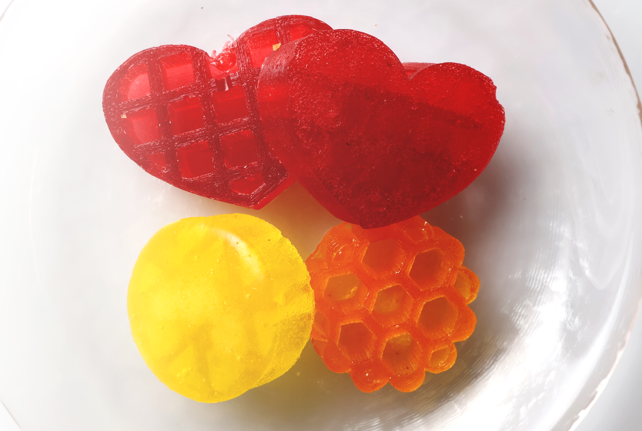

ChewTect: Designing Temporal Food Texture via Computational Molding
ACM DIS 2026
Yamato Miyatake, Aoi Yamada, Huaishu Peng, Parinya Punpongsanon.
ACM DIS 2026
Yamato Miyatake, Aoi Yamada, Huaishu Peng, Parinya Punpongsanon.
Abstract: Food texture plays a crucial role in the overall sensory experience and the functional properties of food, evolving dynamically from the first bite to the final chew. Traditional methods for modifying food texture, such as adjusting cooking parameters, often compromise other key attributes, including appearance and nutritional value, whereas existing computational approaches